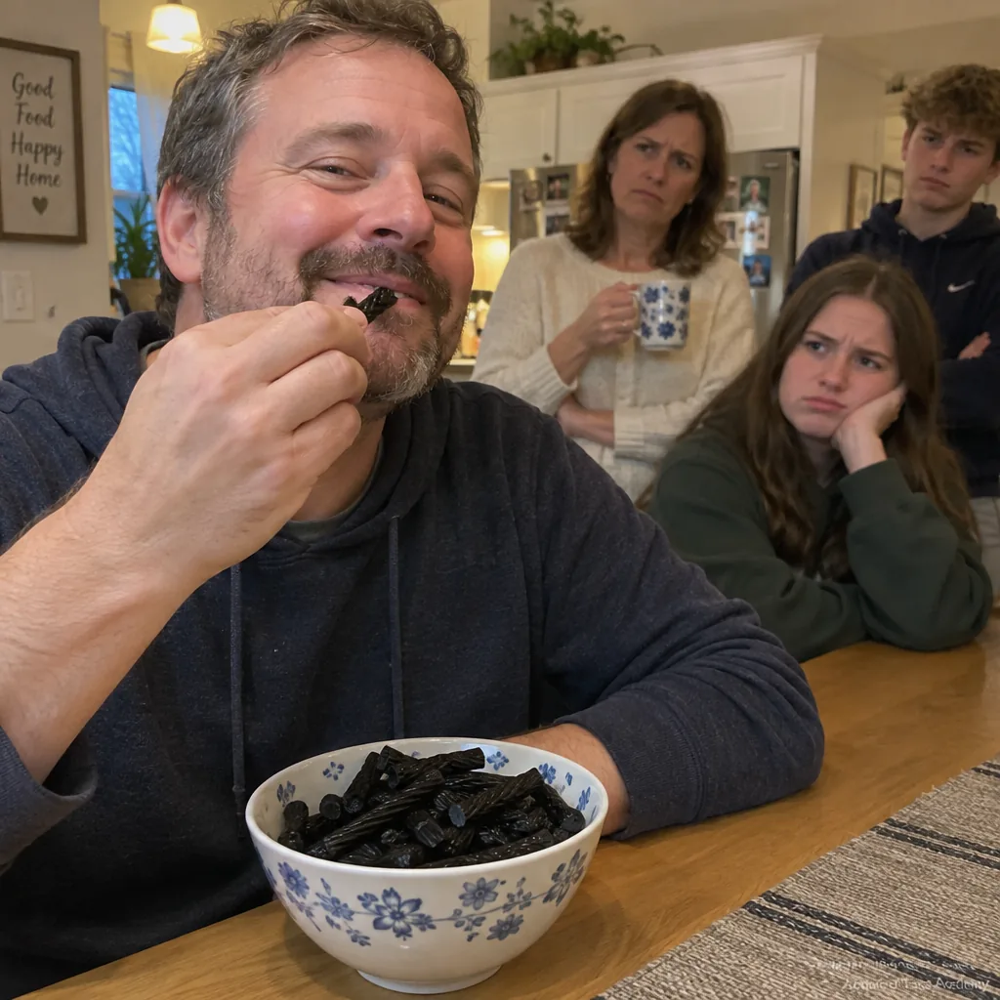
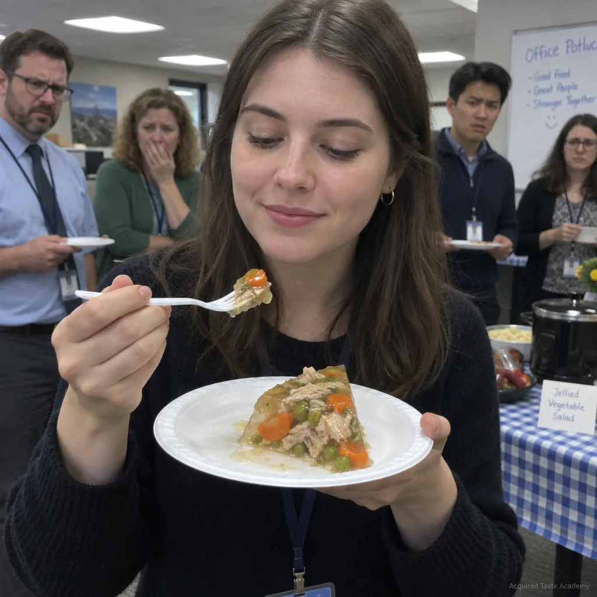

Photographic documentation, submitted by graduates, catalogued by the registrar as evidence
The Academy does not publish testimonials. Words can be coached. Instead, the alumni office maintains this photographic record, to which graduates submit unprompted and often at strange hours. Each plate is verified for two criteria: the food is difficult, and the confidence is visible.
Plate I. Graduate, Class of 2026, photographed minutes after commencement. Gas station sushi, selected without reading the label. Faculty reviewers note the nod.

Plate II. Alumnus, TAST 115, at a family gathering. Salted black licorice from his own supply. The family's expression is not graded.

Plate III. Alumna, capstone cohort, at an office potluck. She brought the aspic. She also finished it. Both facts appear in her performance review.Plate IV. Alumnus, TAST 410, enjoying durian in a public park within legal limits. The distance of the other parties was measured and framed.
§Submissions
Graduates may submit documentation to the alumni office. Photographs must be unstaged, unfiltered, and unaccompanied by apology. Current students appearing in submissions will be credited toward their practicum hours, within reason.